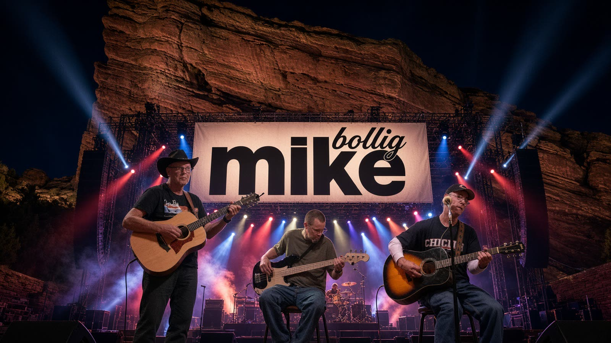

Singer · Songwriter
Mike Bollig
Story songs about small towns, big cities, fishing buddies and Colorado girls. Hit play, watch the videos, or download your favorites.

Listen
The songs
19 tracks. Open the player to pick a song, or use the arrow to download the MP3.
Photos